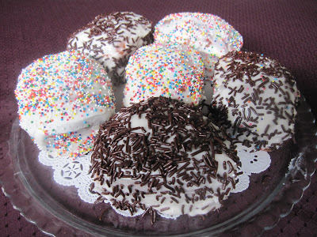

home
paska
special easter bread
ingredients
- 1 tsp of sugar
- 1 tsp of unflavoured gelatin
- 1 1/2 tbsp of regular yeast
- 3/4 cup of milk
- 1/4 cup of oil
- 1/2 tsp of vanilla extract
- 3 eggs
- 1/2 lemon (juice and zest)
- 1/2 cup of sugar
- 1 of tsp xanthan gum
- 1/4 tsp of salt
- 1/2 tsp of baking powder
- 1/2 cup of millet flour
- 1/4 cup of white bean flour
- 1/4 cup of brown rice flour
- 1/2 cup of tapioca starch
- 1/4 cup of corn starch
- 1/4 cup of sweet rice flour
directions
- mix sugar and gelatin, add warm milk - whisk in yeast and let proof
- beat eggs, sugar, vanilla, oil, and lemon juice and zest
- add proofed yeast
- blend together all of the dry ingredients
- add dry ingredients all at once to liquids and beat on high for a couple of minutes
- spoon into desire greased pans or tins (smooth tops with wet hand) and let rise in warm place for about 30-60 minutes until doubled in bulk
- bake at 350 degrees for 20-30 minutes
- let sit in pan for a few minutes before removing to cool on rack
- let cool completely and then ice with white icing and decorate with sprinkles - coloured or chocolate
here is what it will look like when done
